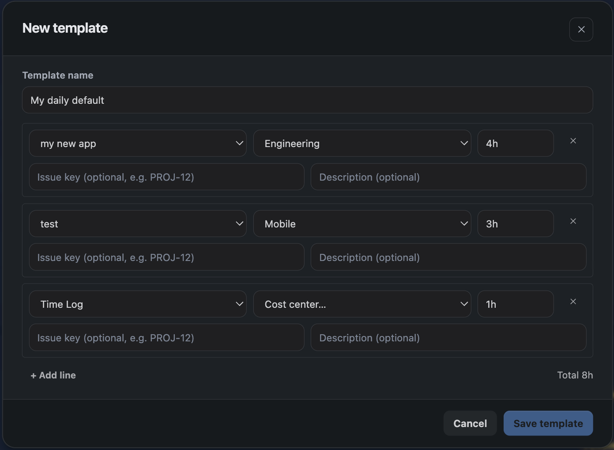
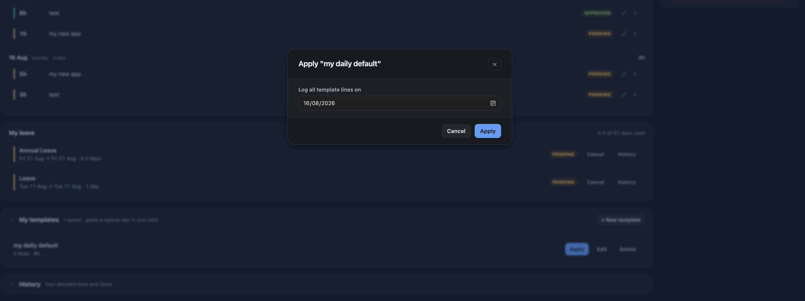

A template is a saved set of lines you log often — a standing allocation, a weekly ceremony, a fixed support rotation. Applying one creates the entries in a single action.
Templates are the only way to log against several projects at once. The Log time dialog uses one project and one cost centre for all its rows; a template line carries its own.
1. Personal and project templates
There are two kinds, using the same editor and behaving identically:
| Kind | Managed from | Who can use it |
|---|---|---|
| Personal | The Templates section of the Summary tab | Only you |
| Project | Project Settings → Templates | People working on that project |
Create a personal one for your own recurring pattern; create a project one when a whole team logs the same shape of work each week.

2. Creating a template
- Open the Templates section — on the Summary tab for a personal template, or Project Settings for a project one.
- Add a line — for each piece of work.
- Set the project and cost centre per line — these can differ from line to line.
- Set a duration — in 5-minute steps, and optionally an issue and a description.
- Name and save it — the name is what you pick from later, so make it recognisable.
A template stores project, cost centre, issue, duration and description for each line. It stores no date — that is chosen when the template is applied.
The lines of a template may not exceed 24 hours in total, since applying it puts them all on one day.
3. Applying a template
Three ways in: the three dots beside Log time in the Hub header, the Templates section of the Summary tab, or a dashboard gadget. You choose the date; every line lands on that date.

Applying creates the entries directly rather than opening the Log time dialog for you to confirm. Check the date before you apply — a template dropped on the wrong day is corrected by deleting the entries, not by undoing the apply.
4. Applying runs the same checks as typing
A template goes through exactly the validation a manual entry does. It will be refused if:
- a cost centre on one of its lines has since been detached from its project or deactivated;
- the date is inside a locked period, or a submitted or approved week;
- a line would breach a cost centre allotment or the project's weekly billable cap;
- the lines would take the day past 24 hours.
Where a cost centre is the problem, the error names it, so a template that has gone stale after a reorganisation is quick to fix rather than mysterious.
5. Managing templates
Rename, edit and delete templates from the same screen. Deleting one does not touch time already logged from it — those are ordinary entries once created.